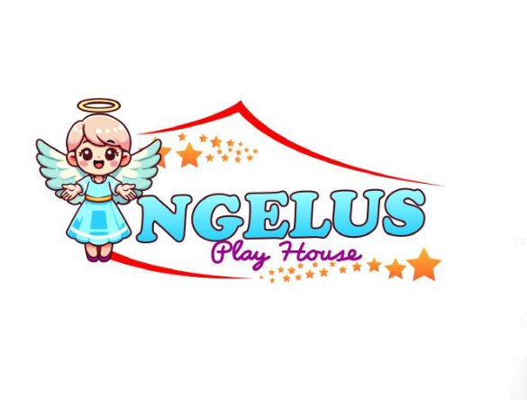
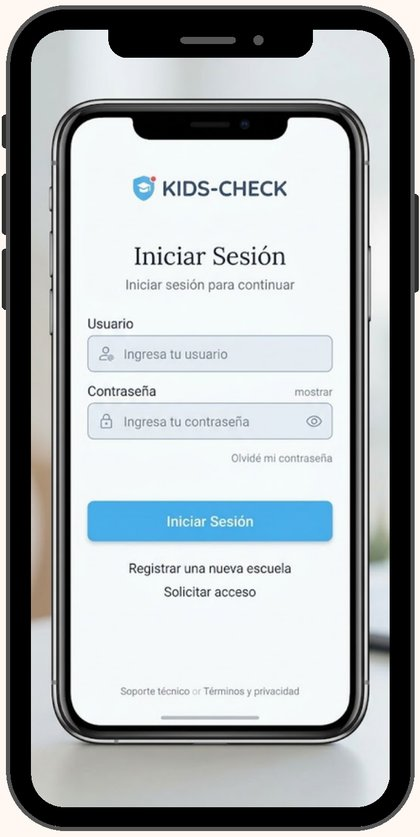
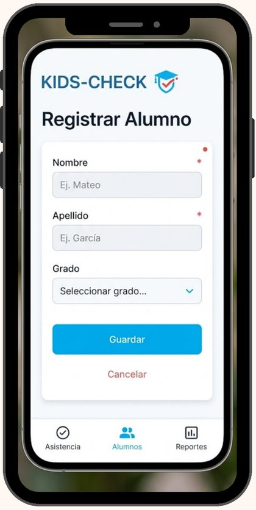
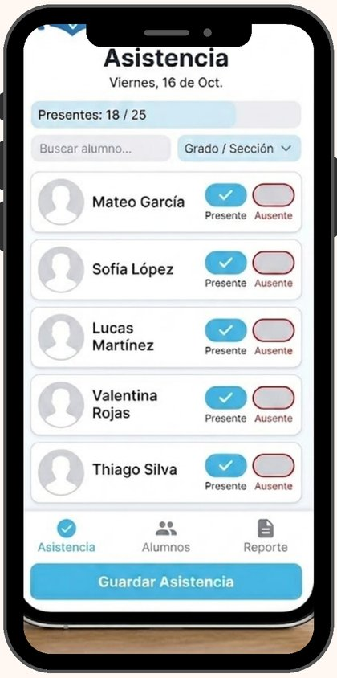
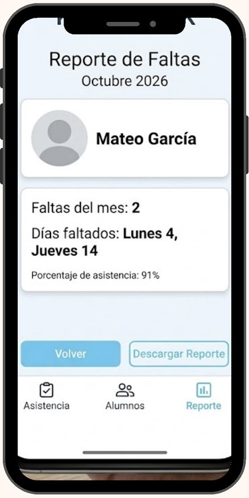

Pérdida de información
Las hojas y cuadernos se extravían o se deterioran, sin copias de respaldo.
Sistema digital que reemplaza el papel por una herramienta rápida y amigable: toma lista con un par de toques y consulta el historial al instante.
La institución carece de un sistema digital para registrar la asistencia escolar, lo que genera pérdida de información, errores y retrasos.

Las hojas y cuadernos se extravían o se deterioran, sin copias de respaldo.
El registro manual genera equivocaciones y datos difíciles de corregir.
Revisar el historial de un alumno toma demasiado tiempo.
Un sistema web que optimiza la gestión de asistencia escolar mediante la digitalización de procesos administrativos, centralizando la información de estudiantes, usuarios y registros de asistencia.
Un recorrido por las cuatro vistas principales del sistema.




Marca Presente, Ausente o Tarde: los colores cambian con transiciones de CSS.
Toma lista, registra alumnos, administra grados y genera reportes desde un mismo sistema.
Datos directos y sin pantallas recargadas: días de falta y porcentaje de asistencia.
Cualquier docente la usa con un par de toques, sin manuales ni conocimientos avanzados.